更新於2017-09-21，文字很多，圖片較驚悚，慎點！！
正文從這裡開始↓↓↓
1989年的中年婦女來了，坐標廣州，之前一直想戴牙套進行牙齒矯正，但因為談戀愛期間，擔心另一半不能接受，拖到現在單身了才下定決心去做的。雖然身邊的朋友意見不一，有些覺得年紀大了還未婚，戴了牙套就更不好找對象了。但是自己覺得嘛，反正戴不戴牙套都會到30歲，戴不戴牙套都是單身狗，那就讓自己圓了一直想戴牙套的心願吧。
我的情況是上牙兩顆門牙的中線往一邊歪，也不太整齊，下牙的牙齒比較擁擠，另外嘴巴也有點凸。平常自拍很少露齒笑，露齒也必須找角度才能沒那麼難看。具體看下圖（照騙，不喜勿噴）
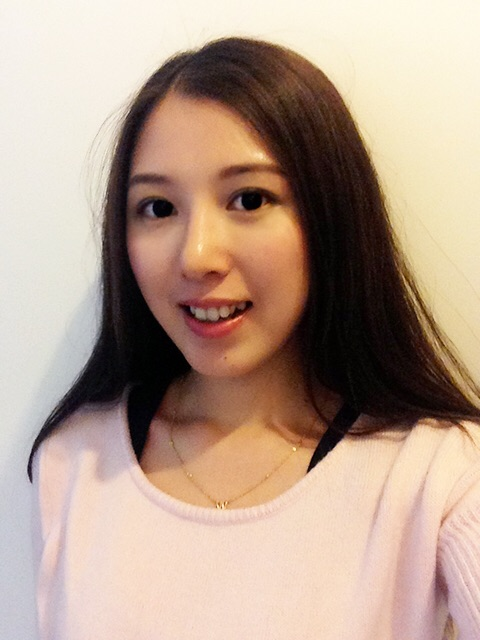在選擇醫院之前，還是有對各家口腔醫院做一定的瞭解，最後選擇了廣東省口腔醫院（昌崗總院），因為它是公立醫院，收費價格都是根據省物價局的標準來訂立的，相對於其他的私立醫院的收費，還是比較能讓人接受的；至於醫療技術，省口腔應該是可以的，畢竟口碑一直都在。
--------------------------------------------------------------------------------------------------------------------------
2017-04-01:今天是下午到省口腔，掛的正畸科，號源很足，基本上不需要預約，掛號費RMB16。正畸科在5樓，前台的護士是隨機給患者安排醫生的，等候的時間也不長。見到醫生後，醫生會先初步檢查一下口腔和牙齒的情況，也會詢問平時咀嚼過程中會不會容易咬到口腔壁的肉和覺得自己的牙齒有什麼問題會想進行矯正之類的問題。初步溝通後，醫生會告訴你需不需要拔牙、拔牙的數量以及具體要矯正的其他問題。說完最基本的以後，如果要出確定的方案，醫生會讓你先去交款照X-RAY，這裡的費用是RMB120。在1樓拍片，等候時間也是很短，不需要自己拿結果，只要拍完片直接回去樓上找主治醫生即可。醫生拿著X-RAY的結果分析你牙齒的結構和存在的問題，這樣你會直觀很多，在整個溝通的過程中，醫生會很清晰地告訴你費用的問題和正畸可能出現的一些情況。說完以後就是你考慮是否真的要正畸的時候了，因為真的確定要正畸的話，需要先交RMB1724，這個費用是包含做牙齒模型、矯正前拍照片等。完成了上面這些以後，醫生還會再檢查一遍牙齒，然後在矯正病歷裡把基本情況列清，最後就是約定下次複診的時間，醫生說下次再去的時候就是拔牙的時候了，心裡莫名地有點小激動，既緊張害怕但又興奮期待。今天的收費單據都在下圖了↓
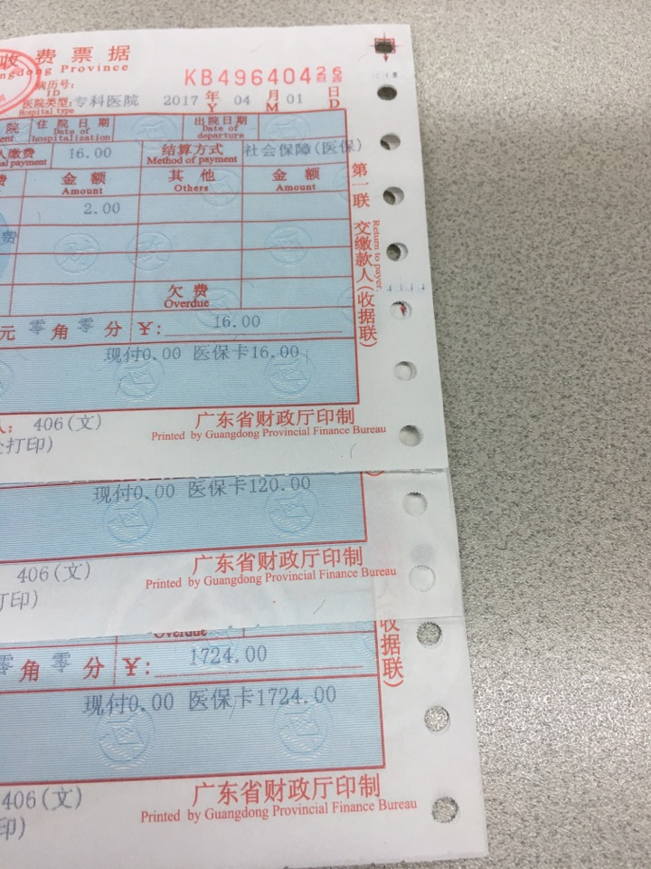--------------------------------------------------------------------------------------------------------------------------
2017-04-21:原本是要在4月13日複診的，結果由於單位要參加市組織的合唱比賽，複診時間只好改為今天。因為知道要落實方案了，所以今早9點就來到省口腔，掛了兩個號，分別是正畸科和口腔外科（後面會解釋為什麼掛兩個號）。正畸科和上次等候的時間差不多，很快就迎來醫生的"召見"，主治醫生的態度依然還是很好，接下來就是介紹我具體的矯正方案了：1、需要拔掉3顆牙齒（不含智齒），右上牙1顆、下牙左右各1顆；2、建議打支抗釘，約2-3顆；3、其中1顆左上牙在正畸結束後打磨形狀替補缺失的22牙。對於需要打支抗釘，我表示極度恐懼，但是醫生強調了3次打支抗釘不痛（好吧，我只能默默地接受）…
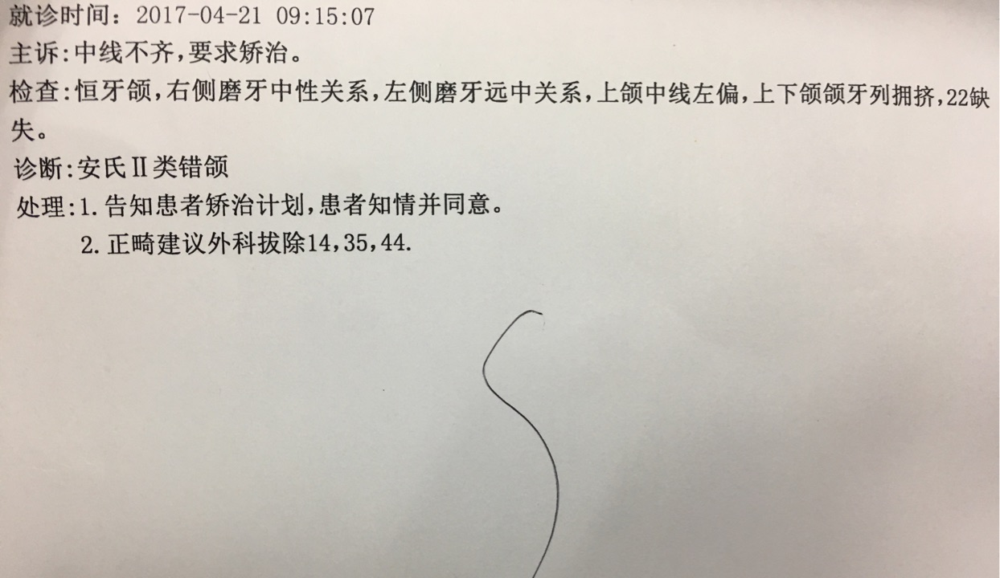聽完方案，自然就是到了交費時間，這次需要把第一期未交齊的費用繳清，金額看下圖↓
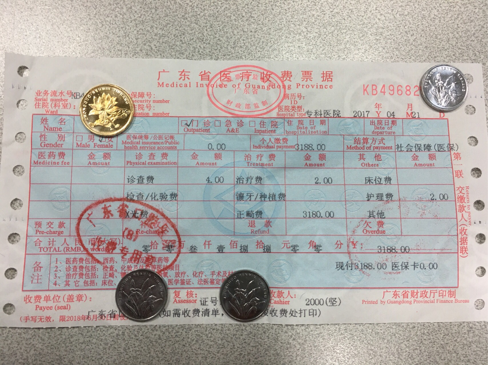在初診的時候，醫生建議我這次複診把牙也一起拔了，就不用跑兩趟，這也是我剛剛說的為什麼把口腔外科的號也一併掛了的原因。順便要說的是，省口腔的口腔外科號源還是挺緊張的，建議需要拔牙的小夥伴們早點去掛號（網上預約掛號幾乎是秒沒）。口腔外科（在6樓）的醫生很多，但看這個科的患者也非常多，輪候時間大約1個半小時，我的治療時間倒很短，打麻藥以及拔牙整個過程大約15分鐘就完成了。拔3顆牙齒的收費如下↓
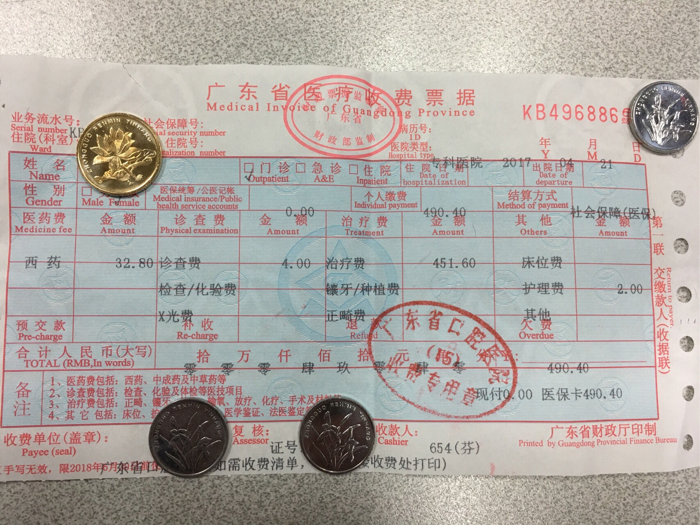一口氣拔掉3顆健康的牙，我心裡表示一萬個不捨，畢竟它們一直都是好好的。拔牙是不痛的，但拔完（麻藥效力仍持續）以後，因為上下牙都咬住大大的棉花球，所以嘴唇根本沒法合上。重點是，我連口水流到下巴了都完全沒知覺…一個多小時後吐掉棉花球，嘴裡依然是血（這是正常的），不過麻藥消退以後，拔牙的痛感才是讓人煎熬的…幸好開了止痛藥，但不到實在忍不了的痛，我都是不會吃的。接下來的圖片可能會引起不安，敬請家長指引！！
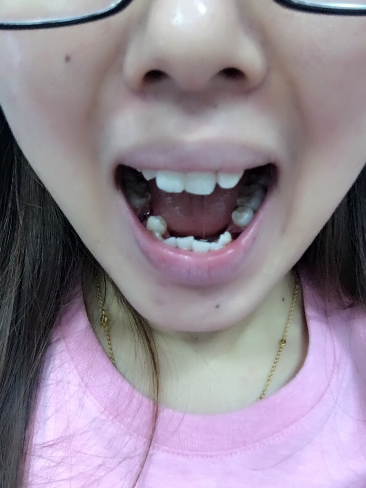❤️溫馨提示：要拔牙的小夥伴們記得吃早餐，女生要避開例假時間。
評論裡有小夥伴們問及整個正畸的費用問題，我特意拍了留在醫院的那份個人正畸病歷上寫的收費階段和具體金額，主治醫生說每個人的病例不同，所以僅作參考，看下圖↓
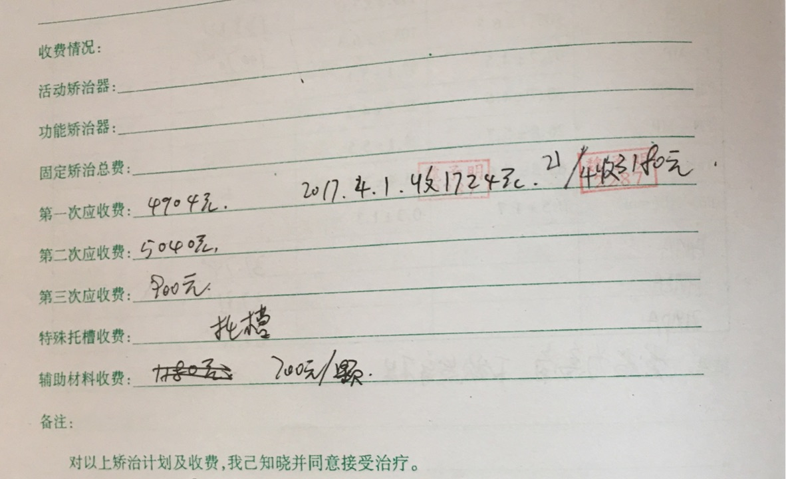托槽那一欄需要根據個人具體選擇哪種托槽而定，一般不鏽鋼的是3000+，陶瓷的是6000+，醫生說舌側矯正的治療費用是不鏽鋼的4-6倍，沒必要的話不建議選舌側。輔助材料（我這裡的是支抗釘）是需要另外收費的，因人而異。
--------------------------------------------------------------------------------------------------------------------------
2017-05-05:終於到了上托槽的大日子了，我選的是金屬自鎖托槽，材料費用是RMB3206。
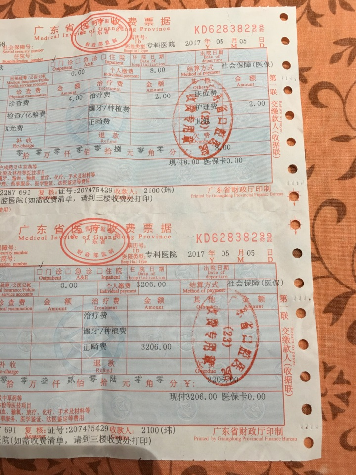上托槽的整個過程大約是2個小時（請提前抹好厚厚的潤唇膏和臉部保濕，因為上托槽的時候嘴巴跟臉部被大大地撐開了），套上鋼絲以後，牙齒能明顯感覺到被施壓拉扯，而且吃東西的時候牙齒非常痠軟、上下的門牙還很疼，預感又要瘦一圈…醫生說這種不適感大約一週以後就會好起來了，還叮囑了不能吃排骨、雞翅、豬蹄等硬物，黏牙、大件的食物都不能吃，一日三餐必須徹底刷牙，少吃零食，還現場播放了刷牙的教程以及使用牙線、沖牙器等的方法，也建議了多備些牙刷（細頭、軟毛）。
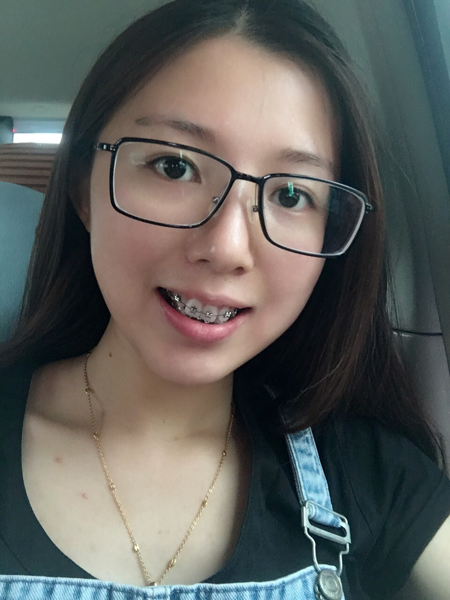--------------------------------------------------------------------------------------------------------------------------
2017-05-27:最近實在忙得不可開交，幾乎一週有好幾天都在東莞出差，所以害得更新也拖了幾天。趁今晚回家坐和諧號的時間，正好上來更新。好，言歸正傳！前幾天（也就是23號那天的晚上），我親手刷牙把左下牙最裡面托槽的鋼絲給卡下來了…自行腦補我的力氣是有多大？！於是，我第二天就要去省口腔拜訪我的主診醫生啦。這次意外複診的所有費用看下圖↓
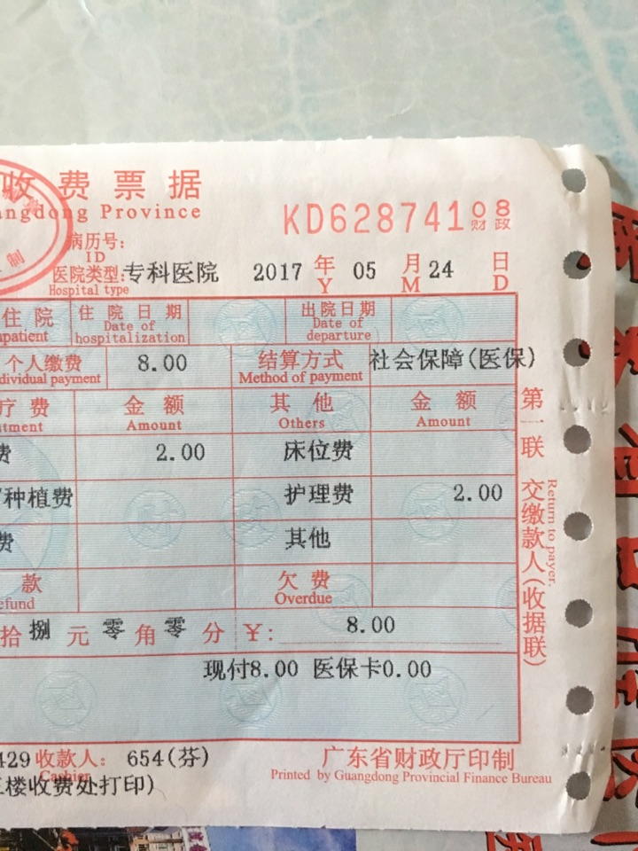去之前提前給醫生打了電話，說明了情況，但還是需要預約就診時間，定在下午的2點半。但是2點去到省口腔掛號，已經排在第6個了…由於前面的患者治療時間比較長，所以我的就診時間大約是4點才開始。這次的複診，醫生除了把掉下來的鋼絲卡回去，還把右上4那顆牙齒的托槽拆了下來重新粘，因為醫生說感覺位置不太對，所以調整一下托槽的位置。另外，醫生還在原來只有一根鋼絲的左側上下各加了一根鋼絲，力度也相應增加了，牙齒能感覺到明顯的外部作用力和疼痛感…但這次最難受的是右上的鋼絲非常扎，左邊的口腔潰瘍還沒全好，右邊已經扎得開花…正畸蠟又可以派上用場了！！
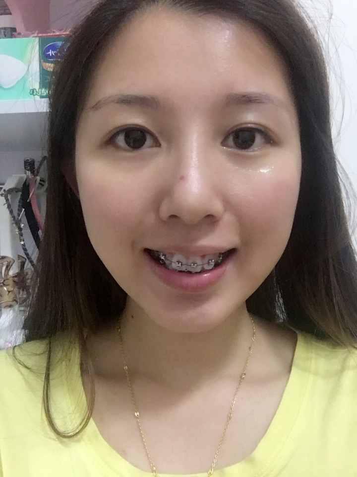請見諒洗完澡沒有眉毛的我以及右眼還沒吸收完的眼霜…（Pls call me "無眉娘"，哈哈哈）看上圖還是很明顯可以看出我的牙齒往一邊傾，而且幅度還蠻嚴重的。
這次意外的複診，令牙齒又開始了新一輪的酸痛無力…才剛剛正常吃東西不到一個星期，又打回原形要吃軟趴趴的東西（淚目）！
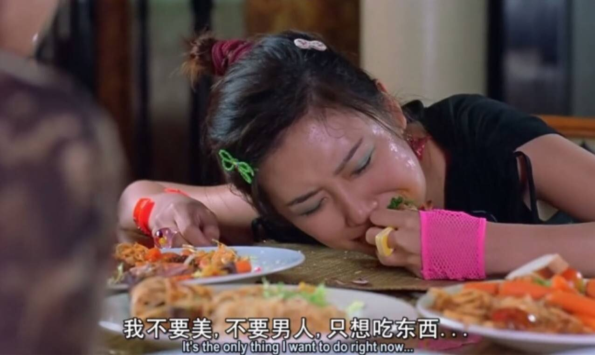這段時間，很多朋友、同事都不理解我為什麽要戴牙套，感覺我對自己要求太高…試問，牙齒陪伴我們一輩子，讓它變得更好怎麼會是要求太高呢？而且，因為我平常需要參加合唱比賽或者演出，朋友們也會覺得不美觀或者擔心影響發聲。其實，我可以很負責任地說，戴牙套對唱歌的人並沒什麼影響，只是對觀賞你演出的人有影響，哈哈哈哈…再說，自從戴了牙套以後，我連妝都沒化過一次（不是放棄自我管理，而是沒有需要我化妝的場合，畢竟外出吃飯這類節目對戴牙套的人來說還是蠻麻煩的…），包括今天參加了一個快閃商演，我也只化了個眉毛（有眉毛有靈魂，哈哈哈…），唇膏不敢塗，怕托槽會全蹭掉，哈哈哈哈哈哈…我感覺我的牙套很自然，毫無違和感啊，對不對？！牙套就是我最好的妝容啊，哈哈哈哈…好，上圖↓
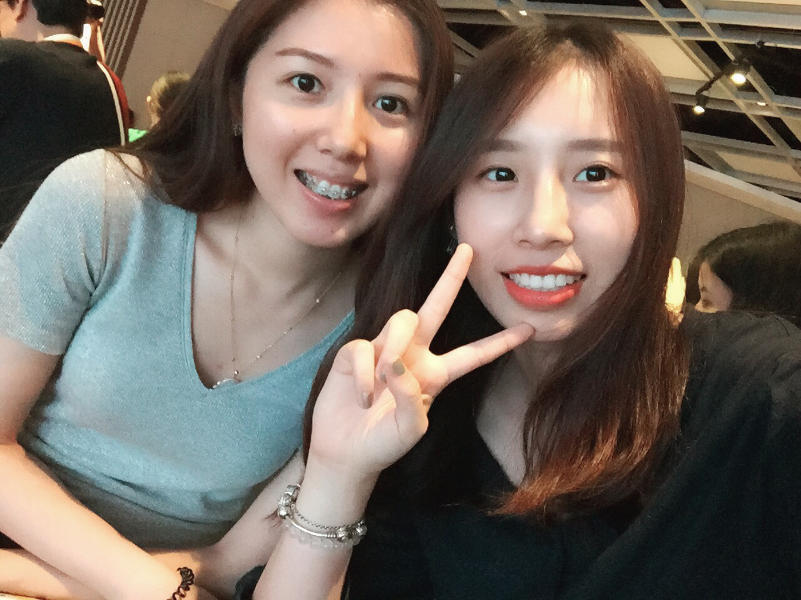--------------------------------------------------------------------------------------------------------------------------
2017-06-19:依然是忙到不行的節奏，所以更新又稍晚了幾天。原本約的是6月15日複診，但是剛好當天要出差，就改成了6月13日複診了。照樣的1樓掛號，5樓前台放單排隊等叫號，但是不知道為什麼感覺最近兩次複診等候的時間都比較久，9點40分到的省口腔，一直到11點多才就診。
這次複診醫生給我的牙齒換了3根鋼絲，分別是2根長鋼絲和1根鎳鈦鋼絲（好像是這麼叫的），原本上面的門牙的鋼絲是有點烏黑顏色的，現在換成了銀色的，遠看的話還不太看得出來，但是我能感覺到2根長鋼絲的力量是巨大的，因為這次換了鋼絲加力後，門牙連刷牙都疼，容我哭一分鐘…這次複診雖然換了鋼絲，但還是照舊只需要付掛號費RMB8，看下圖↓
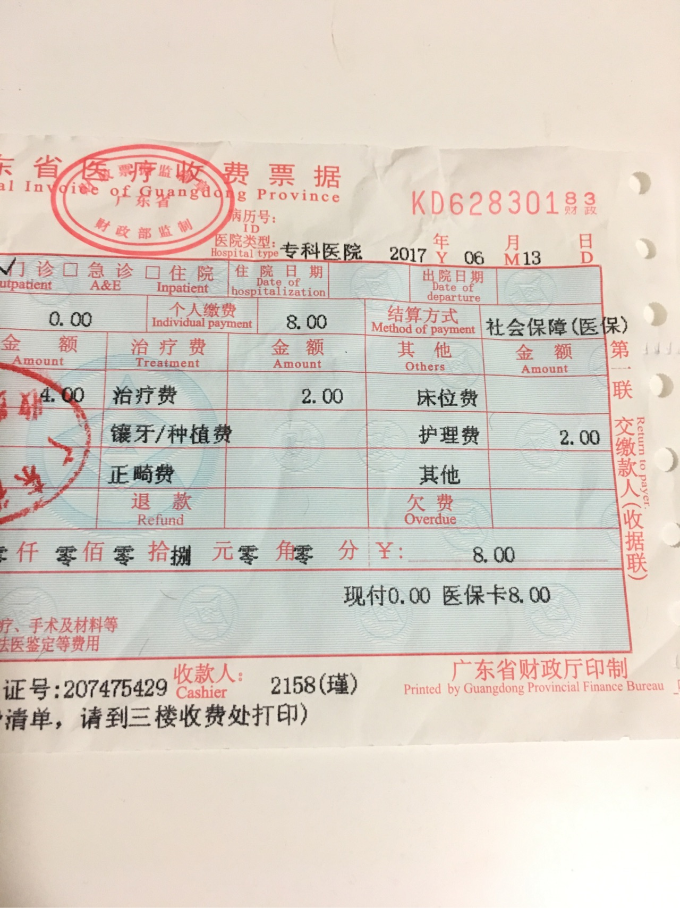這次複診醫生還問我有沒有感覺到自己的牙齒有變化？說真的，是有的，因為有一顆牙齒我長期盯著它看，變化算比較明顯的，其它的我倒沒怎麼留意，哈哈哈哈…（就是我下巴那顆痣對著的那顆上牙，大門牙旁邊那顆）原本它是擋住了後面那顆牙齒的，現在它後面那顆牙齒已經可以跟大家見面了，哈哈哈哈…
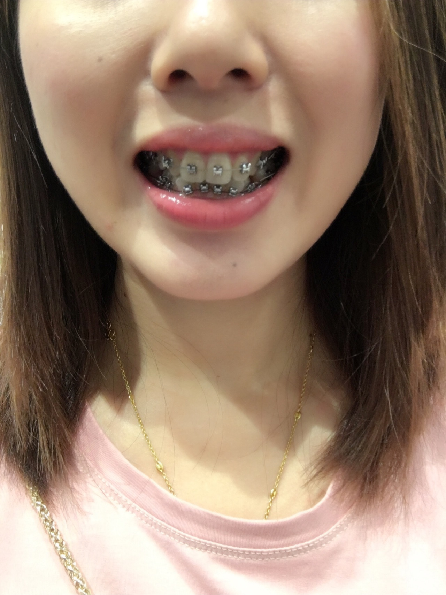有變化是值得開心的事，不過這次複診有點小意外，就是醫生在幫我換下牙的鋼絲的時候，需要打開托槽的扣子，不知道是醫生太用力還是我牙齒不受力，用金屬棒撬開扣子的時候，我下牙其中一個牙齒疼得讓我叫出了聲…還把醫生嚇了一跳，以為發生什麼事了？（手動掩面）後來醫生說，有可能是他太用力，所以牙齒會疼，也有可能是我的牙齒不受力。如果是牙齒不受力的話，那就意味著我治療的時間需要更長…當時聽到這句話內心表示很難過！但也只能默默地接受了…
分享一段複診的小插曲：在候診的時候，看到一位男生陪著他的女票來複診，這位女生就是排在我前面的一個號。她複診完的時候，我剛好進去診室，聽到她和醫生說，每次複診回去牙齒都很疼沒力，吃粥都吃不飽，很容易餓…
分享這段小插曲的原因是，我有點羨慕這位小女生了，哈哈哈哈…因為由始至終都沒人陪過我去省口腔，尤其是拔3顆牙齒的那一回，心裡其實怕得很，但還是得硬撐，給自己壯膽。還記得當時拔完牙去外面給單位採購東西，去到人家前台，接待的和我說下巴有血流下來（因為戴著口罩，別人不知道發生什麼事情了），那一瞬間覺得自己好丟臉…但麻藥沒過實在感覺不到。 晚上到家了，不知道是否因為拔牙過猛，讓例假提前了1個星期就來了…不過，這些都過去了，經歷了就好。請大家好好珍惜那個願意陪你看醫生的人！他/她或許不能替你分擔你的疼痛，但他/她卻給了你一個地方安放你的恐懼，那個地方叫陪伴和鼓勵。
至於戴牙套吃東西方面，我是除了剛戴牙套那頭兩天是吃粥以外，其它後面的時間基本都沒吃粥，因為實在吃不飽…我一般會給自己做土豆泥、山藥泥，然後在裡面加點玉米粒和肉沫（煮到很軟很軟），這樣會比較能填肚子。而且我每天都堅持吃水果，補充維生素，我實在是很害怕會出現牙齦萎縮！！！
然後，我還想分享我最近一個小突破，就是我把留了12年的長髮剪了。剪掉長髮的勇氣就跟決定戴牙套一樣，特別珍惜長髮的女生會懂的，哈哈哈…（↓這是6月13日複診前的照片了，勿噴）
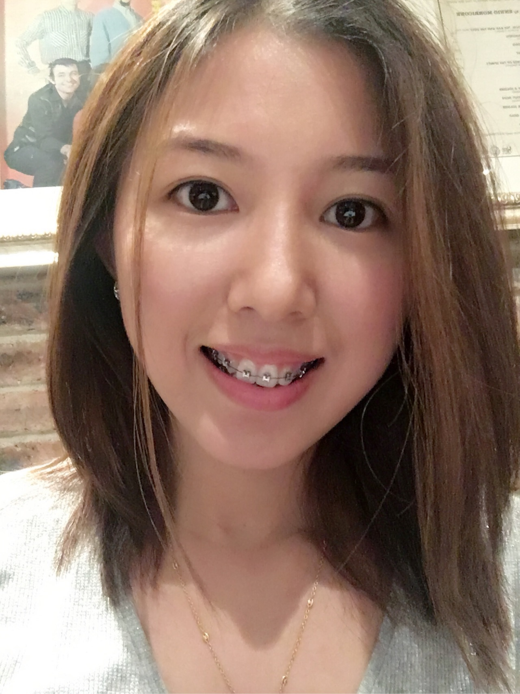--------------------------------------------------------------------------------------------------------------------------
2017-07-11:這次的複診非常守時，按照上次預約的日期7月10日過去省口腔，不需要改期的複診都是棒棒的，哈哈哈哈哈…毫無懸念的，還是老規矩，1樓掛號，5樓前台放單排隊等叫號。不過這次我是11點多才掛號，放單的時候我已經是我主治醫生的最後一個患者了，估計前面他負責的人都來得很早，所以我這次去到從掛號到放單排隊，僅僅是5分鐘就輪到我了，速度很快。不過要提醒打算在這段時間正畸的小夥伴們，因為目前是暑假，所以來看正畸科的人很多，建議錯峰看牙哈。這次特意給大家拍了省口腔的掛號和開診時間，希望對於想正畸的小夥伴們有幫助啦，下圖↓
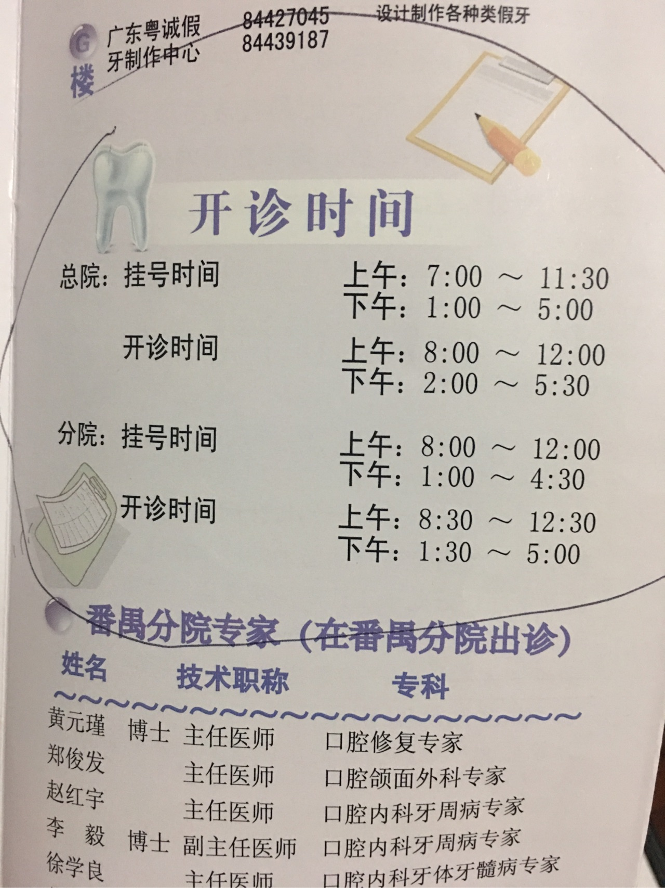這次醫生把我所有的鋼絲全都換了，全換成是銀色的那種長鋼絲了，感覺鋼絲比上次更有力量，因為上下門牙疼得難受…鑒於上次醫生解開托槽扣子用力有點猛和我自身牙齒不太受力的情況，這次我提前和醫生打好招呼，跪求解扣輕一點（已跪在地上）。當然，醫生也如他溫柔的聲音一樣，這次真的輕手了很多，哈哈哈哈…只是他說我下牙的幾個托槽扣子不太好解開，刷牙刷得不夠乾淨是其中很大的原因（聽到此話，恨不得自己化身為一支牙刷往每個托槽裡面鑽）。另外，我跟醫生反映上次換鋼絲以後，感覺左右兩邊的牙齒咬合不太好，右邊咬合沒太大問題，但左邊卻沒法咬合上。醫生說由於我左上有一顆牙齒的位置不太對，導致整個左邊都暫時沒法咬合上，所以他這次在我的左右上牙的底部都粘了玻璃離子（好像是這麼叫吧，具體我也忘了），目的是為了幫助兩邊能正常咬合，但是牙齒卻有一種被架空的感覺…估計需要些時間適應一下。除此以外，醫生還在我的右上一顆牙的托槽跟鋼絲銜接處粘了一顆小珠珠（具體忘了這是什麼材料了，請原諒我可憐的記憶力）…這個小珠珠還需要用光固化儀器（不知道有沒有叫錯，外型有點像一把槍）進行照射才會凝固，但具體為什麼醫生要這麼做，我當時也沒有問（這不太符合好奇心爆棚的我，估計那一刻我靈魂飄走了…）。具體看下圖↓
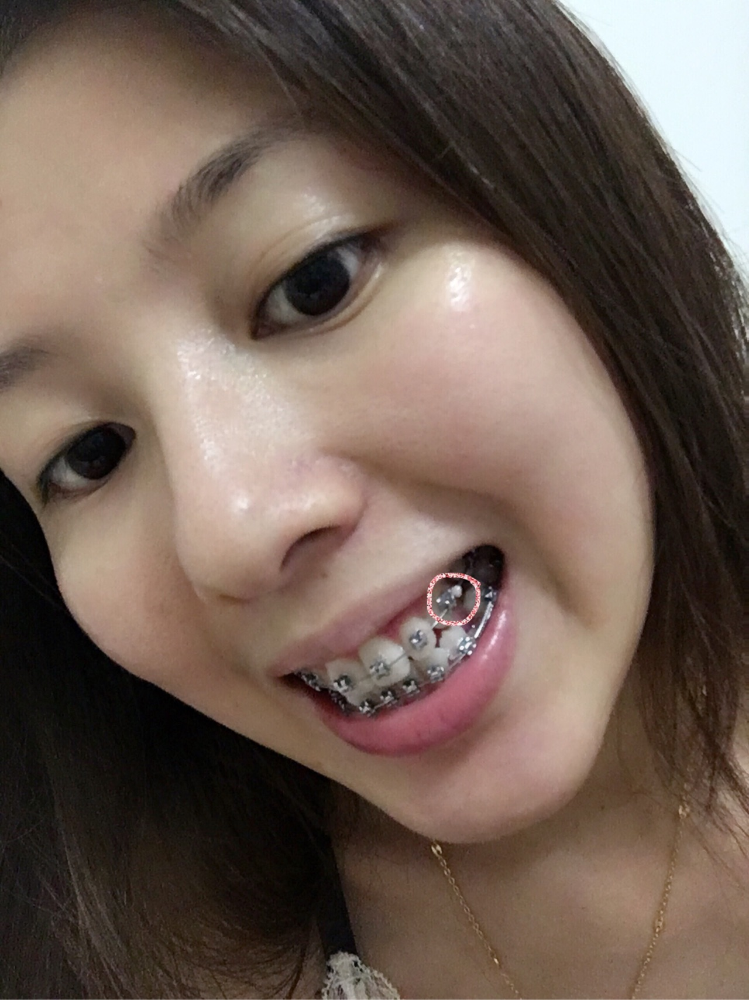雖然這次複診比以往用多了其他類型的材料，但收費依舊是忠誠不變的RMB8（其實就是掛號費），如下圖↓
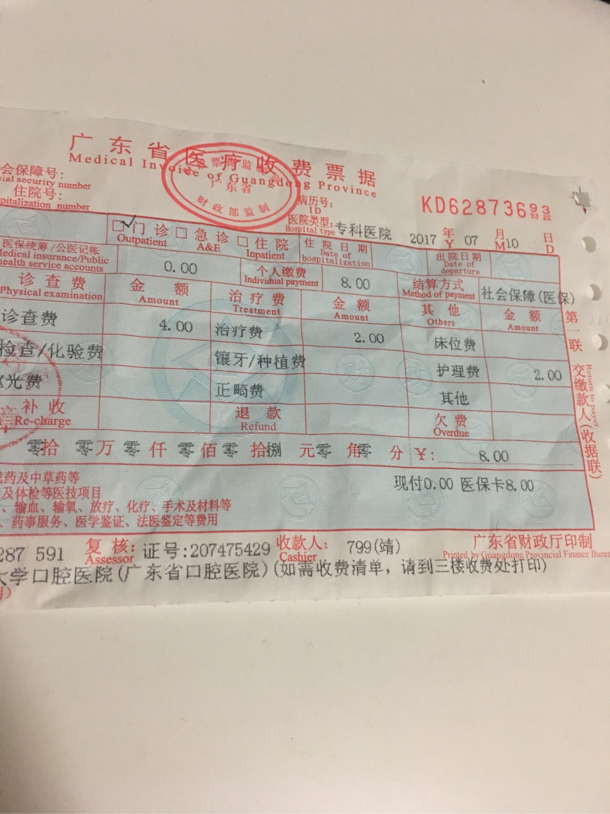每次複診醫生必問，患者必答「感覺到牙齒有什麼變化嗎」？這次的回答是下門牙的變化，下圖能說話，請閱↓
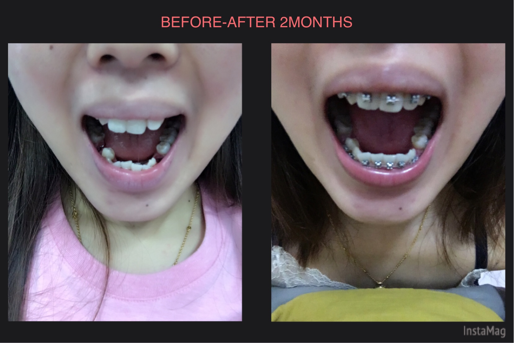敲黑板！！最近私信諮詢關於牙套的網友有點多，但因為我不是專業牙科醫生，所以沒法解答專業層面的問題，而且由於平常工作也比較忙，不能及時地回覆每一個諮詢的小夥伴們，實在很抱歉，敬請諒解。本次的更新到此為止，等感冒好了再分享個人戴牙套期間使用的清潔工具和物品吧（因為好幾個小夥伴都問到了）。
--------------------------------------------------------------------------------------------------------------------------
2017-08-03:最近都有網友諮詢戴上牙套以後會不會顯得嘴更凸或者說合不上嘴？就我個人而言，戴上牙套以後，我沒怎麼留意過自己側面會不會嘴很凸，但是正面倒感覺還好，也沒有出現合不上嘴巴的問題。自從戴了牙套都沒拍過純側面的照片，上週六（7月29日）剛好參加了活動，有朋友抓拍了兩張，供大家參考戴牙套時嘴凸的幅度吧（左邊是我）。↓
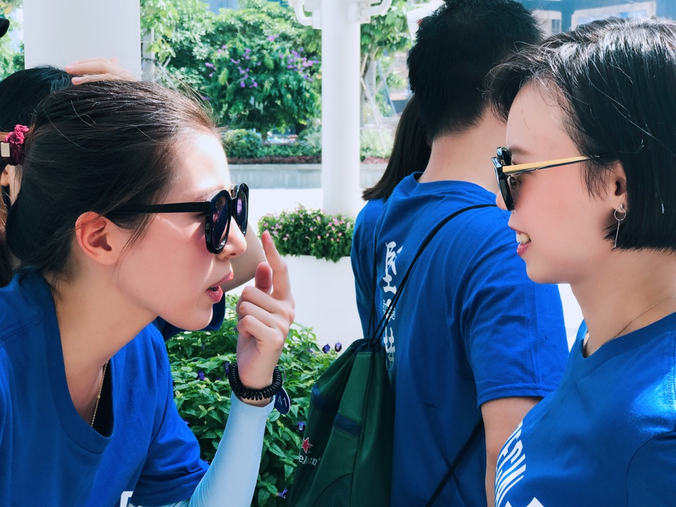--------------------------------------------------------------------------------------------------------------------------
2017-08-19:再次因為工作的事情，被迫將原定在8月11日的複診改到8月14日…10點不到就去到省口腔，但暑假正畸的人實在是太！多！了！一直等到11點50分才輪到我…可怕可怕。嚴重建議要正畸初診的小夥伴們避開寒暑假這種就診高峰期。我這次複診完畢已經12點多，收款台已經下班了，所以只能直接在醫生那裡掃二維碼支付寶結算，所以刷不了醫保卡，也就沒優惠了。本次收費如下圖↓
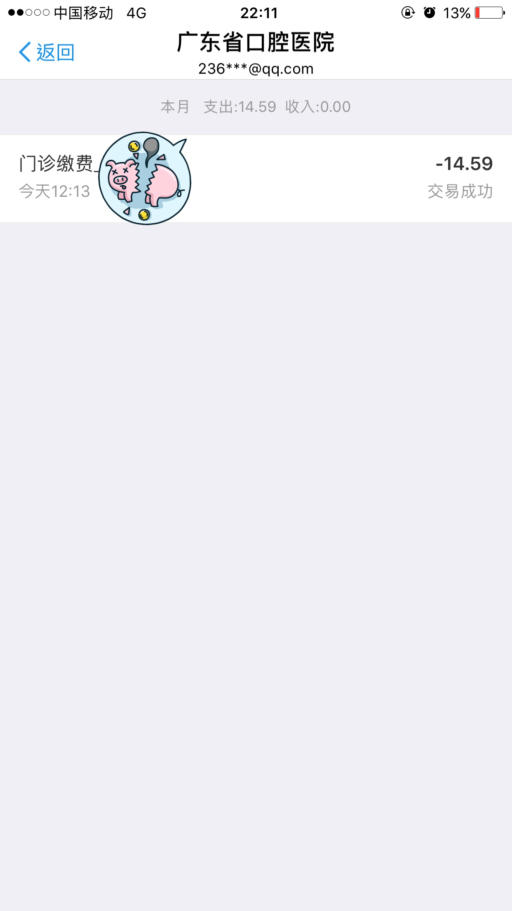鑒於兩個月前複診醫生掰開托槽鎖的時候，有3顆下牙比較不受力，稍用力就疼得叫出來，所以現在每次複診都提前跟醫生打招呼，哪幾顆牙齒需要稍微輕一點，良好的溝通可以避免自己少經歷一些不必要的疼痛。這次換上了2根長鋼絲，換完以後，右上牙很明顯感受到被拉扯的力量，整整疼了4天，完全沒法用右上牙咬東西…但這次慶幸的是，鋼絲並沒有扎嘴，正畸蠟可以暫時打入冷宮。
每次複診醫生必問，患者必答「感覺到牙齒有什麼變化嗎」？這次的回答是沒感覺出來有明顯的變化，請閱（首次用後置攝像頭拍攝）↓
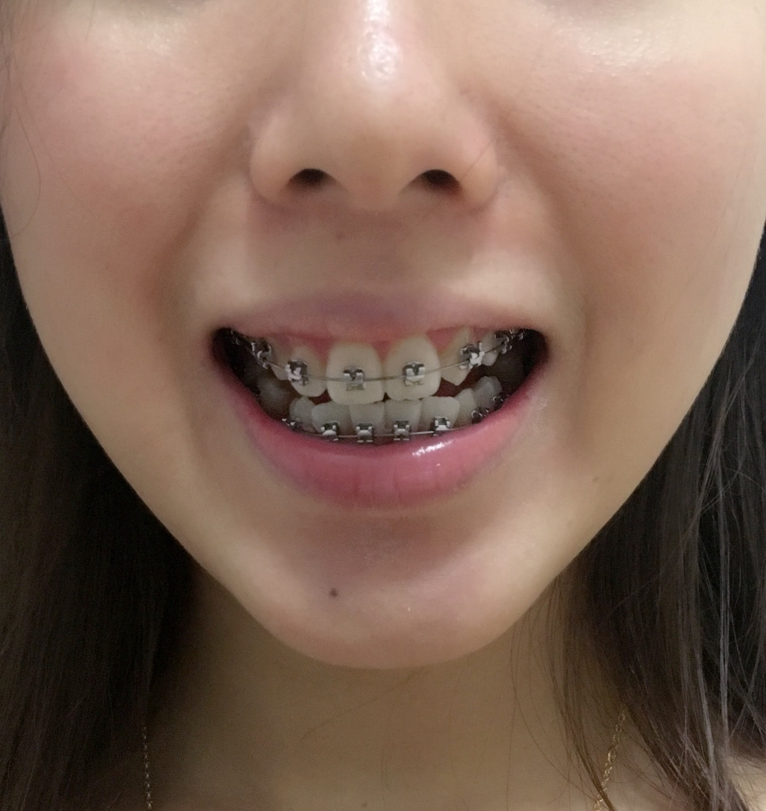這張照片非常清晰地呈現了我的上門牙中線到底有多歪，導致笑起來嘴也像歪的…4個月過去了，下牙的變化是很明顯的，但是兩顆大門牙還是很頑固地不願意移動。不知道為什麼，這次複診讓我感覺支抗釘離我不遠了，也許是自己想多了吧，畢竟醫生還沒說。
咳咳！！在知乎上分享自己戴牙套的過程雖然只有4個月，但是目前收到很多小夥伴的私信。其中諮詢牙套的人占大多數，可是，也慢慢開始出現了個別一些重點不在戴牙套上或者說好奇心有點超出這個回答內容本質的。
所以，我有幾點想說明一下：
1、從5月開始，我除了工作日的正職工作以外，每個週六早上給培訓中心的學生上完課以後，就要趕回HK幫我的客人代購。到8月為止，我只有在上海彩虹合唱團來廣州演出的那個週日算是給自己休息了1天，所以可以說我幾乎是每天都在工作。我是一個從事金融工作的人，經常要加班；給學生上課需要備課；代購是一個體力活，有代購經歷的人應該會比較容易理解。我明白每個想通過正畸來改善牙齒狀況的人的心情，所以在開始正畸之前，會搜集很多資料，以及諮詢有過或者正在經歷正畸的人的經驗。但是請不要在我沒有及時回覆私信的時候，惡言相向…我的知乎並沒有開啟推送功能，我只會在一段時間內集中回覆，希望可以互相體諒，我相信大部分諮詢的人都是善意的。
2、我不推薦醫生也不私我的主治醫生。因為我仍處於治療階段，最後的治療效果如何沒有人能預料到，推薦醫生和私我的主治醫生，我認為都是對同樣想正畸的網友的不負責任言論和對其他一樣敬業專業的醫生的不公平，所以對於諮詢推薦醫生的，我一律不再回答，請理解和見諒。
3、我的微博很早期的時候已經停用，有個別網友搜出我的微博號，拿照片來向我確認是否我本人的微博。在這一點上，我覺得關注點已經有點超出戴牙套這個回答的本質，更何況我的微博早就清空所有內容，所以請不要再問我有沒有微博或公眾號之類的問題。
4、很多知乎的網友問能否加微信，在這個問題上，我要先道歉。因為我有兩個微信，一個FOR工作和代購，我相信沒人願意被這種營銷模式的微信刷屏；另一個FOR私人，裡面有我日常生活的紀錄和軌跡，屬於比較隱私的部分，所以請原諒我並沒有開放微信。
5、網絡給了大家暢所欲言的平台和機會，我尊重每個人的思維方式和評論觀點，但尊重並不代表接受，請不要給我下定義。什麼大齡戴牙套是作？什麼發照片是釣魚？什麼照騙不是本人？等等…很抱歉，讓這些網友失望了。從一開始回答這個問題的初心，是記錄和分享自己戴牙套的整個過程。兩個月前的一次複診，有一位小男生在省口腔認出我，所以，哪怕我的照片是有美顏，但至少我還沒醜到五官不能相認。以下截圖是在獲得這位小男生同意的情況下發布的↓
--------------------------------------------------------------------------------------------------------------------------
2017-09-21:這個月的複診是在9月12日，主診醫生當天的預約實在排得不能再滿了，所以，我又成為了上午倒數第2個就診患者…漫長的等待令到內心有點崩潰。暑假雖然過去了，但是因為醫生也在計劃自己的休假安排，所以導致9月和10月可選擇的複診日期比較少，以及在可選日期裡預約的人數也較多…不過是在可理解的範圍內，畢竟醫生也是需要有自己休假充電的時間嘛。就診時間接近中午午休，因此這次繼續用支付寶支付複診費用，金額看下圖↓
這次複診醫生給我上下牙都換了1622（好像是什麼叫的）鋼絲，更換之前，醫生默默地告訴我「這次換上的鋼絲應該要比以往的疼哈，忍耐一下」，除了接受，我還能說什麼？攤手gif。另外還在右側上下牙拔牙處隔壁的兩只牙齒的鋼絲上弄了樹脂球（不知道有沒有打錯），其實我到現在也沒搞懂這個操作的作用是什麼，我決定下次問問醫生，哈哈哈哈…But，這次換鋼絲以後，是真的整副牙齒都疼得讓我五體投地，這酸爽的感覺還持續了5天，嘩啦啦啦啦啦啦…
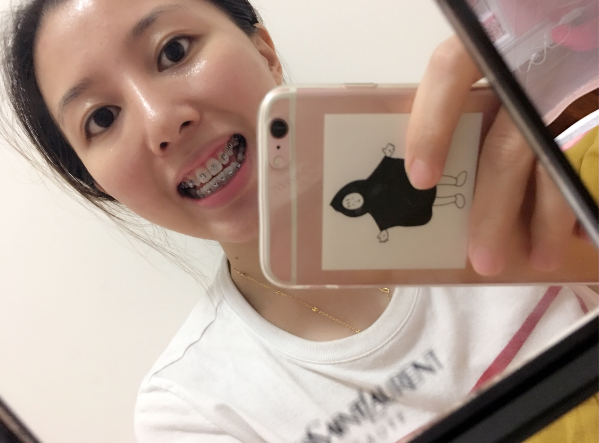每次複診醫生必問，患者必答「感覺到牙齒有什麼變化嗎」？這次的回答依然是下牙的變化，尤其是左側下牙有一顆牙齒已經移動到跟隔壁的牙齒產生了縫隙，不知道這是好還是壞？看下圖，請閱↓
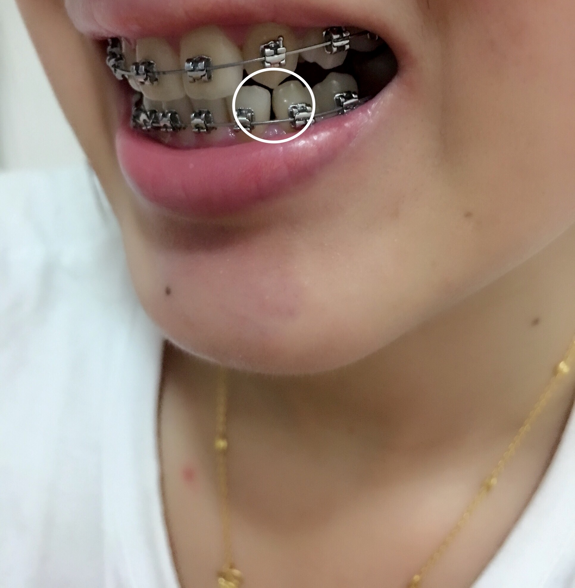看對比圖應該是最直觀牙齒變化了，下牙的變化比較明顯，但對於上牙沒什麼改變的情況，我這次諮詢了醫生，他說「目前階段是要把牙齒先排列整齊，調整中線是要在這個步驟之後再進行的，不要擔心」，聽到醫生這麼說，內心一下子安慰了不少，還以為上牙沒救了…
--------------------------------------------------------------------------------------------------------------------------
下次複診是10月下旬，我相信每天醒來都是更好的自己，持續更新…